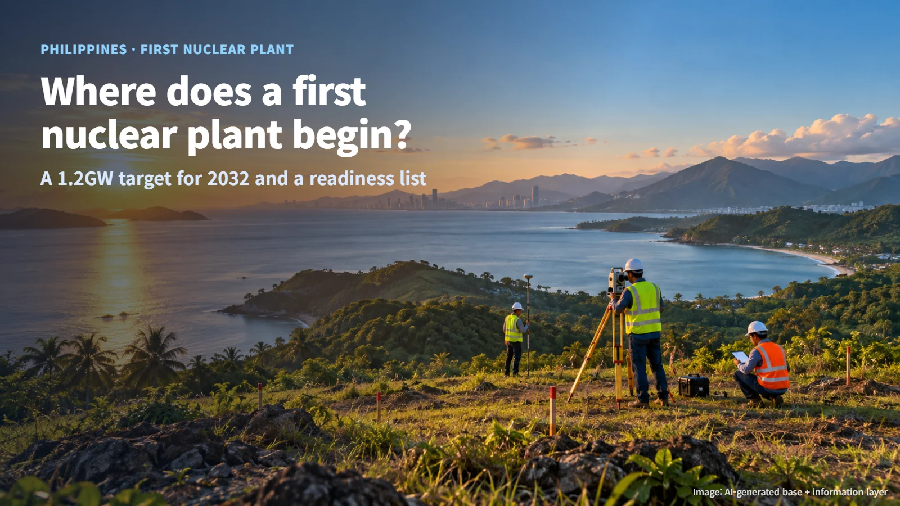
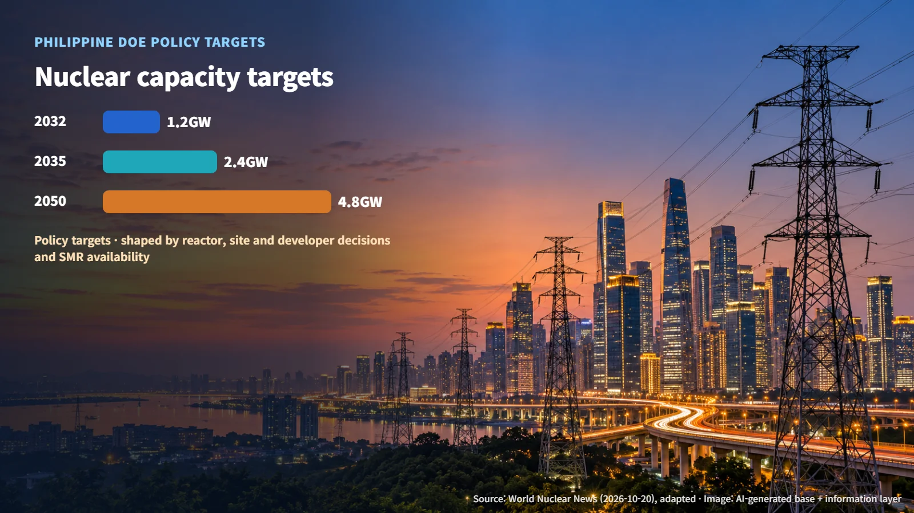
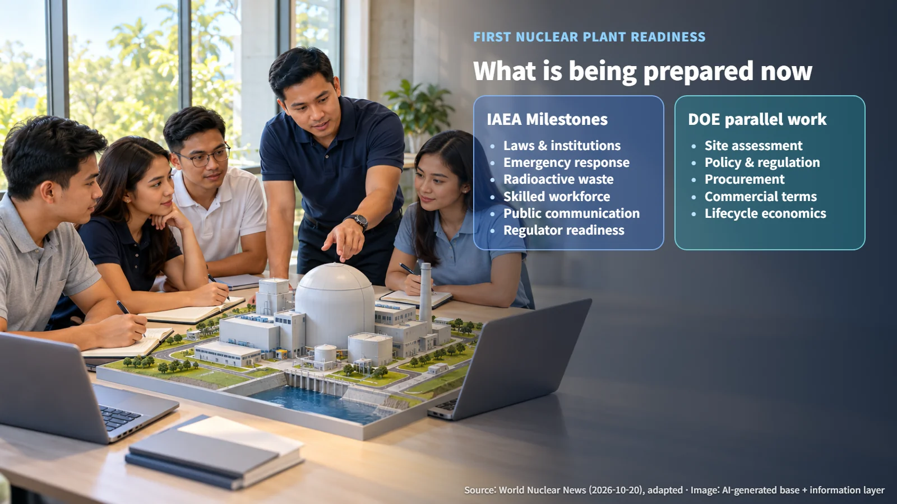

Philippines · First Nuclear Plant
Where Does a Country Start with Its First Nuclear Plant? The Philippines and Its 1.2 GW Target for 2032
Before any concrete is poured, the Philippines is building the sites, rules, procurement framework and people its first nuclear plant will need.
Editorial responsibility: GlobalNuclearNews
When a country with no nuclear power plant announces that it intends to build one, most people picture a vast construction site. Yet the starting point for a first nuclear plant comes long before the day the first concrete is poured. A country first needs the laws and institutions to oversee the plant, people to operate it, a system to respond in an emergency, and conditions under which the project can attract money. The progress the Philippines described on October 20, 2026, offers a clear look at what that sequence involves in practice.

1.2 GW by 2032, 4.8 GW by 2050
At the World Nuclear Supply Chain event held in Manila on October 20, 2026, the Philippine Department of Energy explained that it is laying the policy, regulatory and commercial foundations for the country's first nuclear power project (as reported by WNN). Energy Secretary Sharon Garin pointed to rising electricity demand and dependence on imported fuel as the backdrop, and set out phased targets for introducing nuclear power.
> 1.2 GW by 2032, 2.4 GW by 2035 and 4.8 GW by 2050
A gigawatt (GW) is a unit describing how much electricity a generating facility can deliver at any one moment. Announced from the stage in Manila, these numbers sketch a staircase that climbs from 2032 to 2050. The target capacities are policy goals set by the government, and they will take concrete shape as decisions are made on reactor type, site and project developer.

The Department of Energy said the pace and scale of deployment will depend on factors such as the availability of SMRs. A small modular reactor (SMR) is a reactor designed with a smaller output than a large conventional plant, with the aim of building its main components as modules in a factory and assembling them on site. Which reactor the country can obtain, and when, ties directly into the target schedule.
The IAEA Milestones Approach: A Checklist for a First Nuclear Plant
The Philippines is preparing in line with the IAEA (International Atomic Energy Agency) Milestones Approach. This is the IAEA framework that countries introducing nuclear power for the first time use to check their national readiness step by step. From the moment a country begins to consider nuclear power until it reaches actual operation, the approach works through the conditions that must be in place at each point, one by one.
Think of an airline pilot running down a pre-flight checklist line by line before take-off. The areas the Philippines is strengthening under this checklist are:
- Laws and institutions
- Emergency response
- Radioactive waste management
- Skilled workforce
- Public communication
Alongside these, the country is also advancing operational readiness of the regulatory body that will oversee nuclear power. A nuclear power plant works as a system with two partners: the operator that runs it and a regulator that independently oversees it. The Philippines is preparing its regulator's operational readiness together with the other readiness areas.

What Is Being Prepared Now: Sites, Regulation, Procurement, People and Communication
Patrick Aquino, a director at the Department of Energy, explained that four streams of work are being prepared in parallel:
1. Candidate site assessment: examining whether the land for a plant is safe and suitable. 2. Policy and regulatory development: setting the rules for reviewing and overseeing the design, construction and operation of a nuclear plant. 3. Procurement framework: deciding from whom, and through what process, the reactor and equipment will be purchased. 4. Commercial conditions: establishing a project structure and terms that allow investors to judge whether to take part.
While survey teams walk the candidate sites, regulatory documents are being refined and procurement rules drafted at the same time. Sites, institutions and market conditions all have to mesh before the next decision can move forward.
Economics are on the same table. The Department of Energy stressed the need for a lifecycle economic assessment that takes account of high upfront costs. A lifecycle economic assessment weighs the costs and benefits across a plant's entire life, from construction through operation to decommissioning. Because a nuclear plant takes a large investment to build and produces electricity over a long period, the project comes into clear focus only when it is calculated across that long timeline.
Next Steps: Choosing the Reactor Type, the Site and the Procurement Route
The Philippines is currently at the stage of setting deployment targets and building the policy, regulatory and commercial foundations to support them. Three broad decisions lie ahead:
- Selection of candidate sites and the reactor type (the design family of the reactor)
- Formal definition of the procurement approach
- Financing arrangements and selection of the project developer
In parallel, the regulatory body will complete its operational readiness so that it can take on actual reviews and oversight. Once a reactor type is chosen, the regulatory capacity to review that design becomes a concrete task; once a site is chosen, so do the emergency response plan and public communication for that region. Each decision sets the scope of the preparation that follows.
For a country preparing its first nuclear plant, the clock starts running long before groundbreaking. Behind the figure of 1.2 GW by 2032 sits a readiness list: sites, regulation, procurement, people and communication. When following nuclear news, looking at how much of that list has been filled in, alongside the target numbers, gives a much sharper picture of where a country's nuclear plans actually stand.
Revision r001 · October 26, 2026. Source links expanded and editorial attribution added.